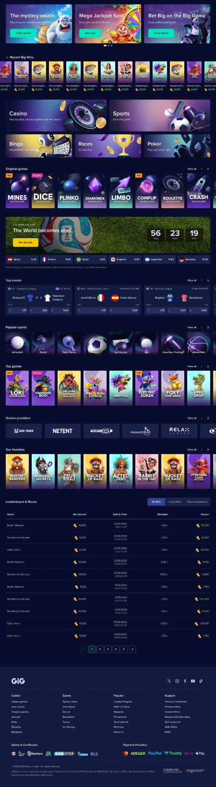
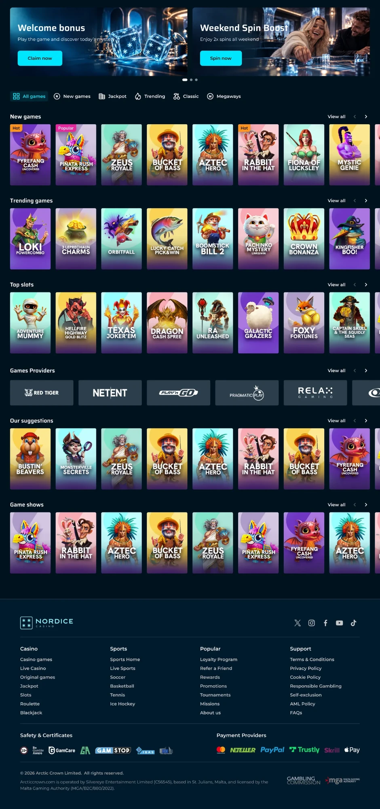
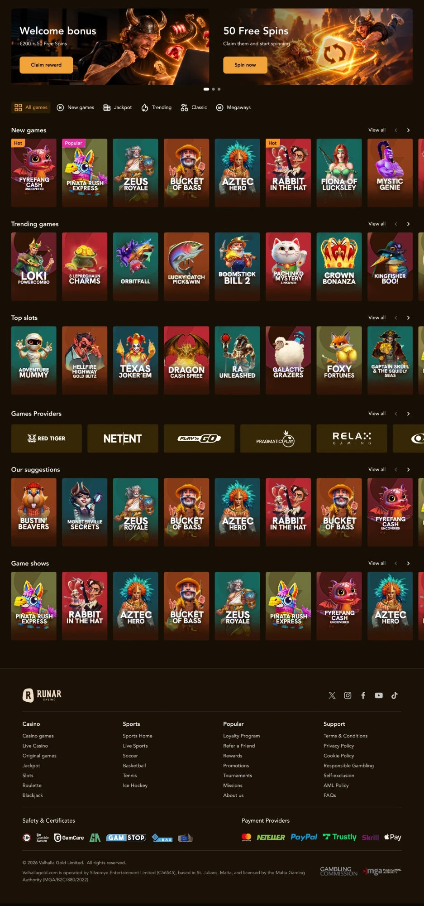
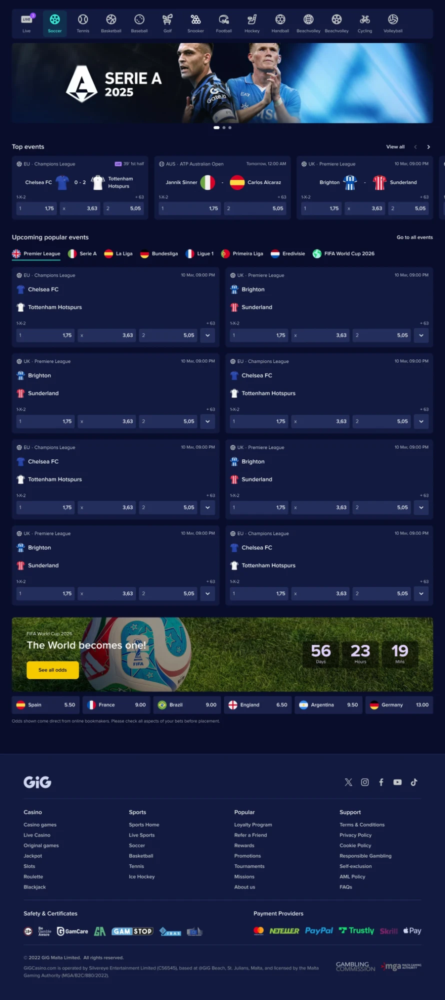
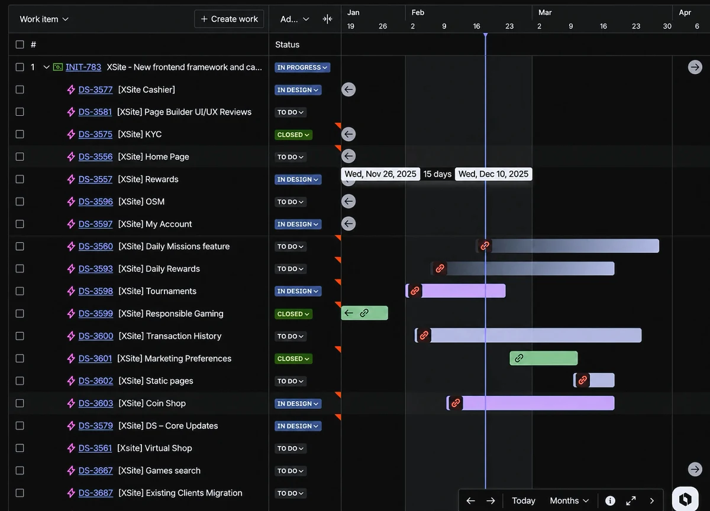

Hi.
A
Lead
Lead
Lead
Lead
Lead
Product Designer.
I think...
I know one.
I’m
10+
years.

Designing
digital
products.
digital
products.
I’ve learned that great products need
Evidence.
Delivery efficiency
0%
faster client delivery
Enabled by a multi-brand design system
built with Figma variables.
built with Figma variables.
Direction.
Direction.
Nordice
Runar
Runar


XSITE · One platform, multiple brands — Nordice & Runar
Craft. Craft. Craft. Craft. Craft.
Craft. Craft. Craft. Craft. Craft.
Craft. Craft. Craft. Craft. Craft.

XSITE · Sportsbook
XSITE · Casino
My work spans
43
operator
brands.
brands.
22
launched
across
15
markets.
Brand skins designed for 43 operator brands within a multi-brand platform.
Product strategy.

XSITE · Delivery roadmap
Primary button
Search games…
color/brand/primary
color/text/default
Card titleSupporting text
Aa · Heading / Display
spacing/16 · radius/12 · brand: WAND
Design systems.
Team of 7 designers
Product
Engineering
Research
AI agents
Design leadership.
Because making
feel simple
Is the kind of design
problem I love.
problem I love.
?

MARÍA MORA
LEAD PRODUCT DESIGNER
moragarciamaria@gmail.com